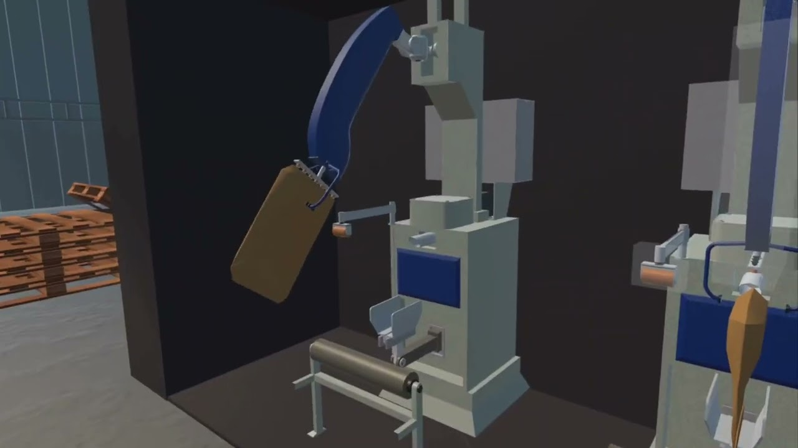
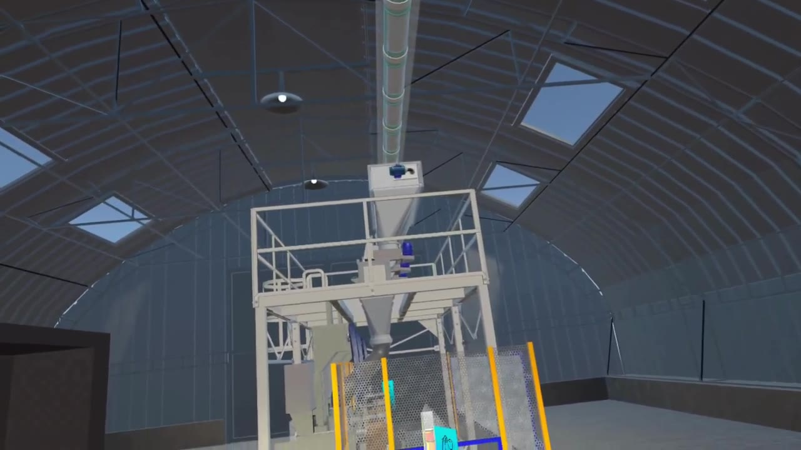
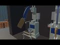
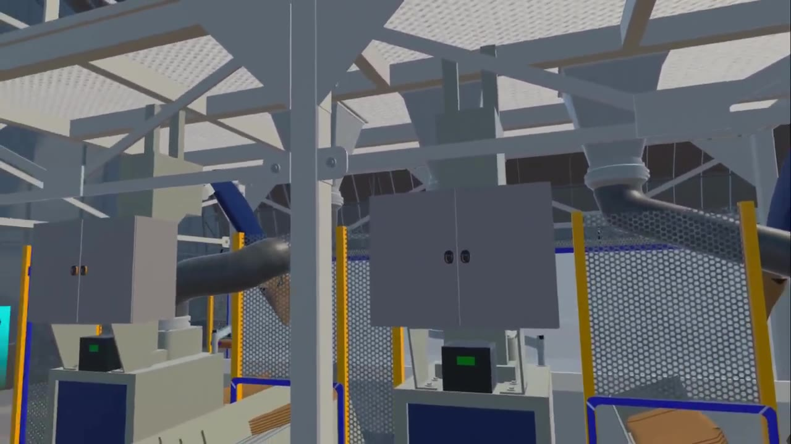
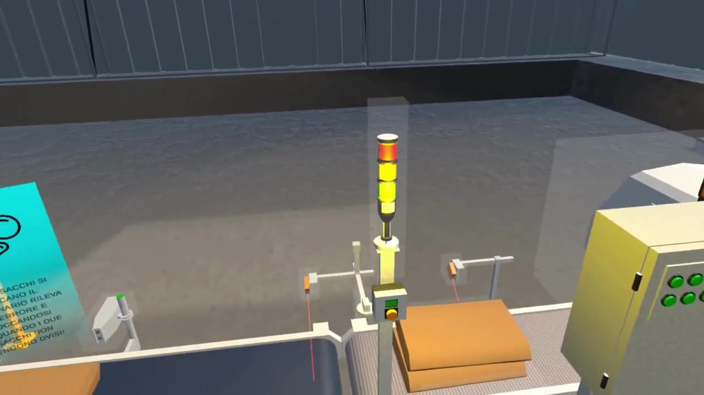

MTM Project — Collaborazione mag–lug 2024
Visita VR — impianto farina
/Introduzione
Per MTM Project ho sviluppato un’esperienza VR per Meta Quest, commissionata da una scuola che, dopo una visita a un impianto di produzione e stoccaggio della farina, voleva rivivere il percorso in realtà virtuale.
Esplorazione della linea, dispositivi di protezione, infobox informativi, interazione con i macchinari e flusso di pesatura dei sacchi sul nastro.
Il lavoro è stato svolto in collaborazione coordinata con MTM.
/Trailer
Registrazione ufficiale su YouTube.
/Tecnologie_Usate
Unity
Costruzione scena, logica di gioco e build per stand-alone Quest.
C#
Interazioni, flussi guidati e comportamento dei macchinari in VR.
Meta Quest
Piattaforma di riferimento per fruizione in classe.
OpenXR
Stack XR su dispositivo standalone.
XR Interaction Toolkit
Grab, puntatori e interazioni con oggetti di scena.
URP
Rendering e lighting per ambienti industriali in VR.
Audio
Effetti da librerie online; integrazione in scena.
/Mie_Note_Sul_Progetto
Su questo incarico mi sono occupato dell’intero lato sviluppo e costruzione dell’esperienza: integrazione dei modelli ricevuti, collaudi su Quest, infobox, sequenze interattive e messa in scena del percorso visitato dagli studenti. Non pubblico dettagli su tool o metodi interni all’azienda committente.
È stato il mio primo contatto prolungato con training VR «serio» dopo le jam: meno caos da 48 ore, più attenzione a chi deve capire un processo reale senza essere in fabbrica.
— Antonio Troiano
/Frame_Del_Progetto
Still estratti dal video pubblico YouTube (nessun materiale di lavorazione interno).

Silo e passerella

Sacchi sui nastri

Impianto sotto la passerella

Semaforo e sacchi sul nastro